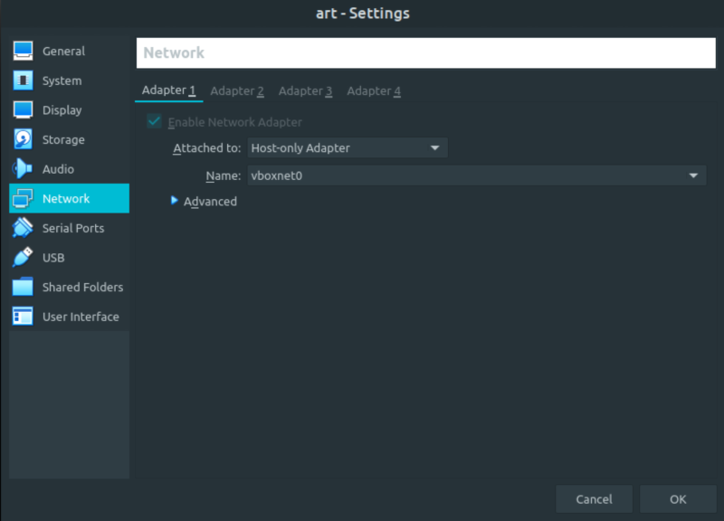
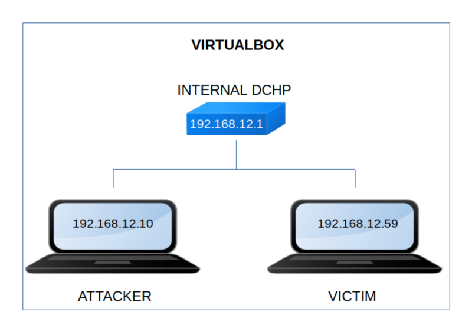

Art
▸ Art
▸ 1. Scan Network
▸ 2. Finding Services and Ports
▸ 3. Enumerate
▸ 3.1 SQL Injection
▸ 3.2 sqlmap
▸ 3.3 InjectIng the query into the URL
▸ 3.4 Steganography
▸ 4. Exploitation
▸ 4.1 SSH connection (First flag)
▸ 5. Privilege Escalation
▸ 5.1 See sudoers
▸ 5.2 wtfutil exploit
▸ 5.3 Getting the second flag
Difficulty: Hard.
Flag: 2 flags.
Learning:
• Reconnaissance
Scan Network
Find services
• Enumerate
SQL injection
Sqlmap
Inject a query into an URL
Steganography
• Exploitation
SSH
• Privilege Escalation
See sudoers
wtfutil exploit
• Download (Mirror): https://downloads.hackmyvm.eu/art.zip
Install the machine on VirtualBox:
1. Download the file and extract it.
2. On Virtualbox choose File->Import Appliance.
3. Select the file “ova”.
4. Accept to import.


Watch your Machine IP.
$ ifconfig
Output:

Diagram
